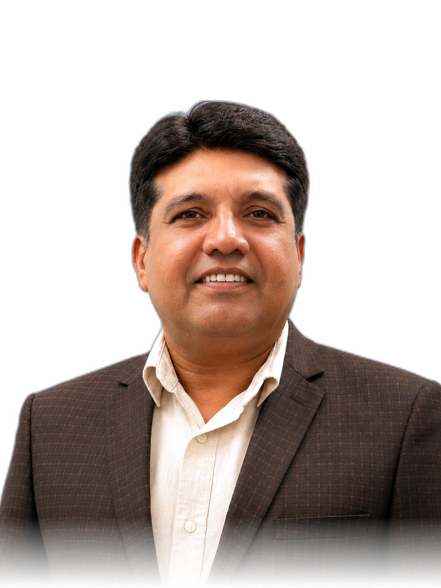

Legal practice and advisory
High Court advocacy, legal opinions, corporate matters, pleadings, and advisory work across professional and educational organizations.
Strategic Member · Aura Platform LLC
Law, advocacy, and regulated services.
Iffat brings a cross-border professional life shaped by legal practice, advocacy, institutional coordination, and current work as a licensed insurance agent in Michigan.

Legal practice and advocacy grounded in Lahore’s professional institutions.
Leading work that helped people navigate formal justice systems.
Licensed, client-facing work helping families and businesses understand coverage.
A Strategic Member informed by law, people, and regulated services.
Law + advocacy
Iffat’s legal work includes High Court advocacy, corporate legal advisory, and years spent helping people access justice. Her professional center is not a legal-services directory; it is the judgment that comes from working where rights, institutions, and real lives meet.
At Children Advocacy Network Pakistan, she managed a legal-aid program supporting victims of violence against children. The work required coordination with police, prosecution, bar councils, the ombudsman’s office, and the prison department, alongside case summaries, stakeholder training, and public legal-rights education.
Selective professional arc
The chronology is a frame for the work, not a résumé on the wall.
High Court advocacy, legal opinions, corporate matters, pleadings, and advisory work across professional and educational organizations.
Management of a legal-aid program with coordination across the justice system and public-facing rights education.
Current client-facing work with Insure3212 across auto, home, commercial, and business coverage.
Insurance + regulated services
As a licensed insurance agent, Iffat works with families and businesses comparing coverage and making decisions about protection. It is a different practice from law, but it shares a client-facing responsibility: explain the choices, understand the context, and treat the consequences seriously.
Her current work through Insure3212 adds a Michigan dimension to a professional life already shaped by regulated, responsibility-heavy services.
Relationship to Aura
As a Strategic Member of Aura Platform LLC, Iffat contributes experience rooted in law, advocacy, institutional coordination, insurance, and the client relationships that make regulated services human.
Why this relationship matters
Aura is building public systems for communication, execution, and authored work. Iffat’s background keeps the human and institutional stakes visible: what people need to understand, what organizations need to answer for, and how trust is carried across a relationship.
A reason to speak
A conversation may be useful for people thinking about legal context, advocacy, regulated client services, or the way institutions communicate with the people who rely on them.
Introduction discussion ↗